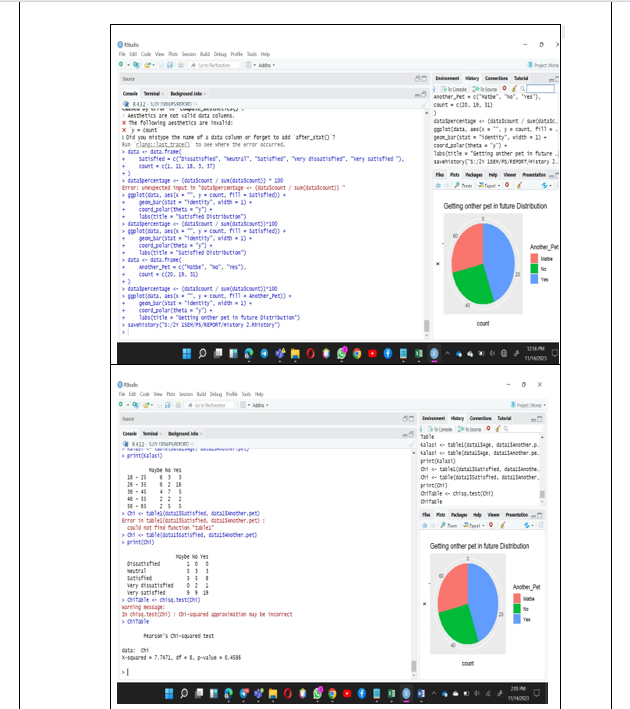

The Senesa Child Center website was a meaningful project where I focused on creating a warm, child-friendly, and accessible digital experience.
Using HTML5, CSS, and JavaScript, I designed and developed pages that clearly present the center’s vision, services, and activities while maintaining a soft and welcoming UI suitable for early childhood education.
I paid special attention to layout, color choices, and typography to enhance usability and emotional appeal.
Through this project, I strengthened my UI/UX design skills, problem-solving abilities, and understanding of user-centered design, while translating real-world needs into an engaging and functional website.
This interface was designed to offer users an engaging and visually clear experience for exploring travel-related information. Developed using HTML5, CSS, and Bootstrap, it includes a prominent hero section with a welcoming message and clear call-to-action buttons to encourage user interaction. The content is organized using a structured table that presents key details such as locations, cities, and the best time to visit, making the information easy to read and understand. Through this design, I improved my skills in responsive layout creation, content structuring, and user-centered UI design.
Posted on:
Data Analysis

This task involved analyzing survey data using RStudio to understand patterns in user responses related to preferences and satisfaction levels. I performed data cleaning, frequency calculations, and percentage analysis, followed by visualizing the results using pie charts to clearly represent distributions. Statistical techniques such as cross-tabulation and chi-square testing were applied to identify relationships between variables. Through this analysis, I strengthened my skills in data analysis, statistical reasoning, and data visualization, while learning how to present insights in a clear and interpretable manner.